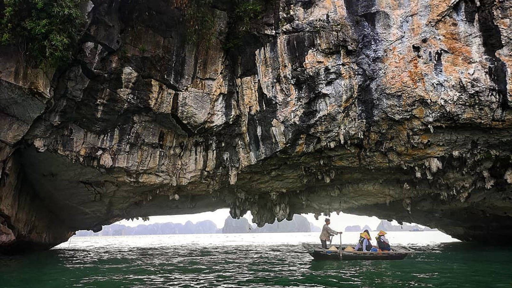
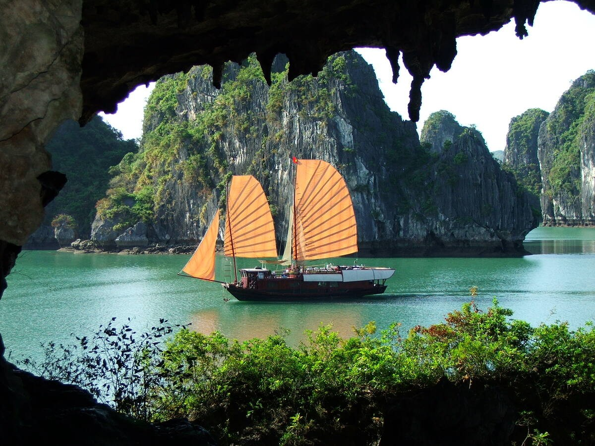
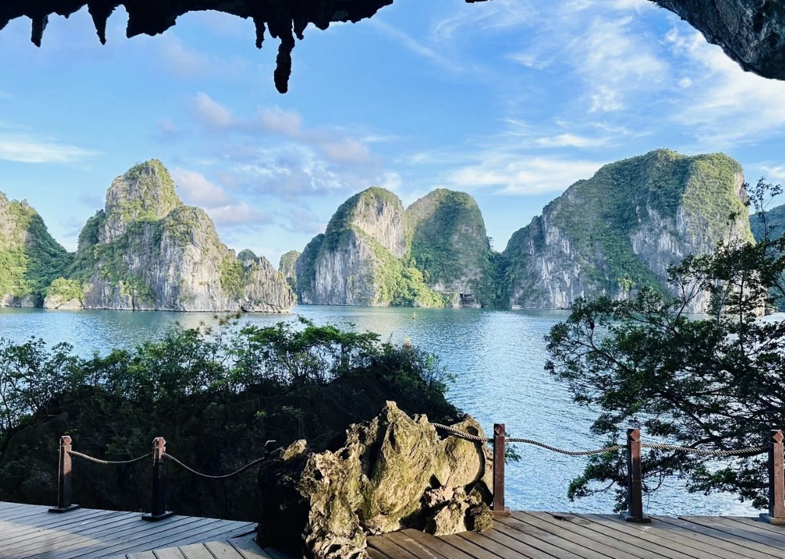
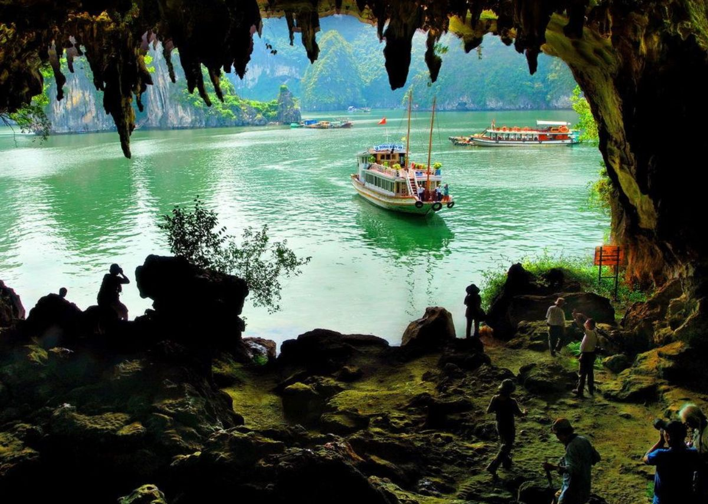
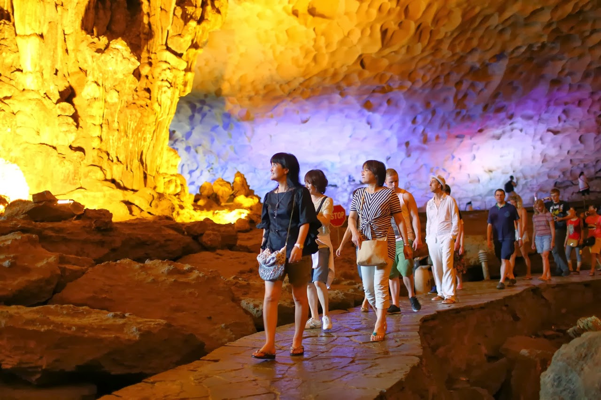
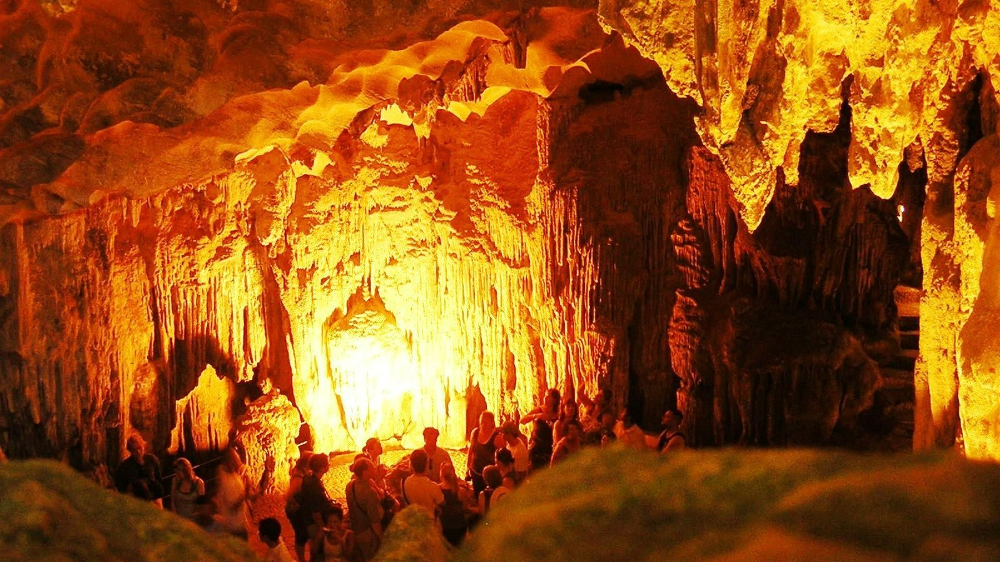

Vẻ đẹp thiên nhiên

Được ví như cung điện dưới lòng đất với những khối thạch nhũ lung linh và huyền bí.

Hang động nổi tiếng gắn liền với lịch sử chống giặc ngoại xâm trên sông Bạch Đằng.

Điểm đến mang vẻ đẹp thơ mộng cùng truyền thuyết tình yêu nổi tiếng của Vịnh Hạ Long.

Nơi du khách có thể chèo kayak xuyên qua cửa hang để khám phá cảnh quan thiên nhiên độc đáo.

Hang động nổi bật với cấu trúc nhiều ngách đá, tạo cảm giác như lạc vào mê cung tự nhiên.

Một trong những hang động đẹp của Vịnh Hạ Long, sở hữu cảnh quan hoang sơ và yên bình.